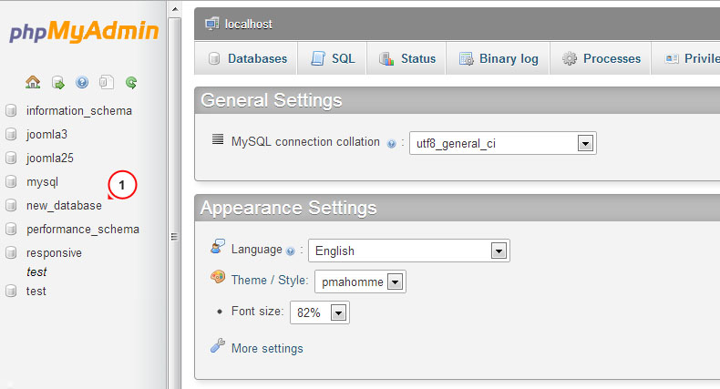

Introduction sdfsdfsdfds sdf dsf What can be found in this package and what it can be used for
Thank you for purchasing Joomla template. This documentation consist of several parts and shows you the entire process how to setup and administers Joomla Web site from scratch. We did our best to make this manual as clear and easy to follow as possible.
What is Joomla CMS?
Joomla CMS is an open source solution for building rich content Web sites. It enables you to build Web sites and powerful on-line applications and requires almost no technical skills or knowledge to manage. Many aspects, including its ease-of-use and extensibility, have made Joomla the most popular Web site software available. Learn More
What is Joomla a template
Joomla template is a skin for your Joomla CMS platform. In other words you can easily change your Joomla Web site appearance installing new template in a few easy steps. With all it's simplicity Joomla template is provided with all necessary source files and you are free to edit or extend it the way you need.
Files structure
The template package you have downloaded consists of several folders. Let's see what each folder contains :
- Documentation - contains documentation files
- Documentation (Installation and Editing).html - main documentation file. You are right here :)
- Joomla - contains Joomla theme files
- theme###.zip - main theme archive. Contains all theme files. Should be installed through Joomla extension manager
- fullpackage.zip - contains complete Joomla installation package with engine files, theme and sample content
- unzip.php - file used to extract files from the fullpackage.zip when uploaded to the hosting server
- Screenshots - contains template screenshots. Not for production
- Sources - contains template source files
- psd - template Adobe Photoshop source files (.psd)
- to_the_root_folder - contains files and directories that should be uploaded to the root directory of your Joomla installation
- dump.sql - database backup file. Contains theme sample content.
- pkg_bundle.zip - contains additional extensions provided with the theme
- fonts_info.txt - contains links where the template custom fonts can be downloaded
- info.txt - contains instructions on how to extract source files
Prepare What do you need to make this work
Before you proceed to setting up your Joomla Web site please make sure you are fully prepared. Please complete the following preparation steps:
Editing software
To feel comfortable working with Joomla template we recommend you to download all applications required. You can see the list of required software at the template preview page.
The requirements may vary for different templates so we'll tell you here what is needed in general:
- First of all you need the right applications to extract the password protected sources_#########.zip archive. You can use WinZip 9+ (Windows) and Stuffit Expander 10+ (Mac).
- You may also need Adobe Photoshop application. It is used to edit .PSD source files and it necessary if you want to edit template design graphics and images.
- To edit template source code files you need some code editor like Adobe Dreamweaver, Notepad++, Sublime Text etc.
- To upload files to the hosting server you may need an FTP Manager like Total Commander, FileZilla, CuteFTP etc.
Hosting
As Joomla CMS is a PHP/MySQL based application, you need to prepare a hosting environment to run Joomla.
If you have a live hosting please make sure it matches Joomla software requirements and is ready to be used for Joomla websites.
Otherwise you can run Joomla locally on your computer using the local server. To create a local hosting server please use the localhost applications as WAMP, AppServ, MAMP etc. Any of those can be easily installed as any other program and used to run Joomla.
Please check the tutorials below on how to configure local development environment:
Getting Started What to click to make this work
Complete Installation
I don't have Joomla website and I want to install it from scratch.
Using this method you'll have Joomla CMS engine, Joomla template, sample content, and all required extensions installed.
Template Installation
I already have a Joomla based Web site and just want to change it's appearance by installing new template.
Using this method you'll have Joomla template, all required extensions installed.
Complete Installation
Complete installation method can be used if you want to setup Joomla website from scratch. We assume that you have completed all preparation steps and have all necessary stuff.
Creating Database
When you are done uploading files to the hosting server you can prepare new database for your Joomla website. You can create new database using database management tool from your hosting control panel (usually PhpMyAdmin).
With phpMyAdmin tool you will be able to create new database in 3 simple steps: (check the slides below)
- Click Database button from the top navigation menu to access the database listing
- Input database name into the "Create new database" field
- Click Create button on the right side
Your database can be seen in the database listing. Click on it's name to get access to the database
-

1. Click Database button to access to the database listing
-

2. Input database name
3. Click Create button -

4. Your database can be seen in the database listing. Click on it's name to get access to the database.
You can also check detailed video tutorial on How to create a database
If you have any issues with creating a database please contact your hosting provider for help and assistance.
Uploading and unzipping
To start working with Joomla you need to upload files to your hosting server. This can be done using your hosting file manager or some third party FTP manager.
- Open your template package directory and go to the 'joomla' directory
- Select 'unzip.php' and 'fullpackage.zip' files and upload them to your server( How to upload files to server. )
- Type the path to the 'unzip.php' file on your server (http://your_domain_name/unzip.php) in your browser.
- You should see the following screen:

Img 1. Unzip.php initial screen.
- In the 'Choose your zip file' select box please select uploaded fullpackage.zip file.
- In the 'Unzip to' filed specify the directory where you want to extract files.
- Click 'Unzip' button to proceed.
Please make sure to set correct permissions for the directory where you are planning to extract files. Permissions should be CHMOD 755 or 777 depending on your server configuration.
Joomla CMS installation
Open your browser and type path to your Joomla directory in the address bar(e.g. http://your_domain_name/joomla). You should see the initial Joomla CMS installation screen:
Step 1 Configuration
Using the "Select Language" box choose the Joomla installation language.
Please note: "Select Language" box allows you to choose the language of the Joomla installation process only. It won't affect your Web site language.
You need to fill all form fields in the "Main Configuration" area. Required fields are marked with asterisk * symbol.
Fill "Admin Email", "Admin Username" and "Admin Password" fields in the right column to create new Joomla website user with administrative rights.
"Admin Email", "Admin Username" and "Admin Password" are required to access your Joomla Web site backend. Keep them safe.

Img 2. Joomla CMS installation. Step 1. Configuration
When you are done click button in the top-right corner to proceed.
Step 2 Database
At the second step of the Joomla CMS installation you need to input your database details. If you are not sure please contact your hosting provider to get the correct details.
As you are installing Joomla from scratch you only need to input "Host Name", "Username", "Database Name" and "Password". You can usually leave other options default. Though there can be some differences depending on your hosting provider.

Img 3. Joomla CMS installation. Step 2. Database
When you are done click button in the top-right corner to proceed.
Step 3 Overview
You are almost done installing Joomla CMS. At the Overview step you need to select whether you want to install Joomla Sample data.
Please note: Sample Data is required if you want to make your Joomla Web site appear as the template preview with all images, sample text and modules configured. To make your template appear as at the preview page select sample data package named "sample_theme###" where ### is the number of your theme.
Select the Sample data package you want to install or select "None" if you want to setup pure Joomla website without any content.

Img 4-1. Joomla CMS installation. Step 3. Overview. Sample data import
Below you can check if database configuration and administration panel access details are valid and send them to your email address if necessary
Img 4-1. Joomla CMS installation. Step 3. Overview. Configuration
You can also check your installation settings and see if your hosting server matches Joomla requirements. If you have any red notification boxes in the "Recommended settings" section please contact your hosting provider for further assistance.
Img 4. Joomla CMS installation. Step 3. Server settings
When you are done click button in the top-right corner to proceed.
Step 4 Installation Complete
Congratulations! You have successfully installed Joomla CMS.
Img 5. Joomla CMS installation. Step 4. Installation Complete
For security reasons please delete the "Installation" directory from your Joomla root.
Tip: You can view the video tutorial on How to install Joomla 3 engine
Please note: if you finished "Complete Installation" section you can skip next "Template Installation", "Sample data installation" and "Extensions Installation" sections as you have all these elements already installed.
Now you are ready to proceed to configuring your Joomla CMS based Web site. Click "Site" button to view your Web site or "Administrator" to view Joomla backend.
Template Installation
This installation method can be used if you already have a Joomla website and just want to change the website appearance installing Joomla template.
Step 1 Open Joomla administration panel and go to "Extensions > Extensions Manager" screen using the top menu.

Img 6. Joomla template installation. Step 1. Extensions Manager
Step 2 Using the Package File "Choose File" button browse for the "theme###.zip" file in the "joomla" directory of your template package
Img 7. Joomla template installation. Step 2. Theme archive upload
Click button to install Joomla template.
Step 3 When uploading is complete you need to activate installed template. From the top menu select "Extensions > Template Manager"

Img 8. Joomla template installation. Step 3. Template activation
Select your newly installed template and click "Make Default" button in the top left corner. Now you can view your website to see the changes.
Sample Data Installation
Sample data is used to make your Joomla website appear as the template preview page. It contains sample articles, images, modules settings, website settings etc. If you are not planning to use sample images or any other sample content please skip this step.
To install sample data you need to complete two simple steps.
Step 1. Upload sample images.
To upload sample images please open your template package directory and go to the "sources" folder. There you should see the "to_the_root_directory" directory. It contains files that should be placed to your Joomla installation root. Please use the file manager to upload files to your server.
Step 2. Import SQL file.
The final and most important step of the sample data installation is the import of the SQL file. SQL file is a backup of the sample database, all Joomla website data is stored there. SQL file can be imported using your database management tool (phpMyAdmin). The template SQL file - "dump.sql" is located in the "sources" directory of the template package.
Please DO NOT import SQL file if you have a live website as it will totally replace your website database and all your data will be lost.
Beware: before importing SQL file please make sure your database table prefix matches the table prefix in the SQL file.
You can check the table prefix directly in the database through the database management tool. Check for the tables names. The prefix is a set of symbols before the table name. (e.g. table "jos_assets" prefix is "jos_"). You can also find the database prefix in the "configuration.php" file in your Joomla root directory. Search for the line 19: public $dbprefix = 'jos_'; (where prefix is "jos_")
If the table prefixes don't match open "dump.sql" file with your code editor and using the Search & Replace tool (CTRL+F or CTRL+H hotkeys) replace "jos_" table prefix (used in the SQL file) with the one that matches your database. You can check detailed video tutorial on how to change database prefix in SQL file.
Now you can import that SQL file to your database.
To import sample data to your database please perform these simple steps: (check the slides below)
- Select your database from the database list in the left column in phpMyAdmin tool
- Click "Import" button from the top navigation menu
- Click "Choose file" and browse for the dump.sql file in the template package "sources" directory
- Click "Go" button to start importing sample data
-

1. Select your database
-

2. Click "Import" button
-

3. Click "Choose file" and browse for the dump.sql file in the template package "sources" directory
4. Click "Go" button to start importing sample data
You can also check the detailed tutorial on how to import SQL file using phpMyAdmin tool
Configuring Modules
Joomla website layout is divided into two main parts - content section and module positions (check module positions map below for mor details). Modules in Joomla are used to output content into prepared positions.
Modules positions map
Available positions may vary in any particular template but general positions map can be seen below:

Img 9. Joomla Template module positions map
As you can see the content area is marked with different color. It has been done as the content area can't handle any modules by default. It displays only page content.
All positions are turned off if no modules assigned so they won't hamper you.
Modules Configuration Table
Please note: If you installed template sample data or used Complete installation method you can skip the following step as it is related to the manual modules configuration.
The table below lists all modules used in this template and shows how to configure them correctly. All modules can be accessed through Joomla Administration panel from the Extensions > Module Manager screen.

Img 10. Joomla Modules manager
1 - Login Form
- Type: mod_login
- Position: modal
- Class Suffix:
- Show Title: yes
- Order: 1
- Pages: All
- Additional info:
2 - Breadcrumbs
- Type: mod_breadcrumbs
- Position: breadcrumbs
- Class Suffix:
- Show Title: no
- Order: 1
- Pages: All
- Additional info:
3 - Search
- Type: mod_search
- Position: navigation
- Class Suffix: navbar-search pull-right
- Show Title: no
- Order: 1
- Pages: All
- Additional info:
4 - Copyright
- Type: mod_footer
- Position: copyright
- Class Suffix:
- Show Title: no
- Order: 1
- Pages: All
- Additional info:
5 - Archived Articles
- Type: mod_articles_archive
- Position: aside-right
- Class Suffix:
- Show Title: yes
- Order: 2
- Pages: Blog
Blog. Donec eu elit in nisi
Blog. In neque arcu vulputate
Blog. Quisque gravida purus vitae
Blog. Vivamus luctus lectus sit
Blog. Vivamus congue turpis in augue
Blog. Curabitur eu dignissim velit
Archives - Additional info:
6 - User Menu
- Type: mod_menu
- Position: header
- Class Suffix:
- Show Title: no
- Order: 1
- Pages: All
- Additional info:
7 - Superfish Menu
- Type: mod_superfish_menu
- Position: navigation
- Class Suffix: navigation
- Show Title: no
- Order: 1
- Pages: All
- Additional info:
8 - Camera Slideshow
- Type: mod_camera_slideshow
- Position: showcase
- Class Suffix:
- Show Title: no
- Order: 1
- Pages: Home
- Additional info:
9 - Social Media
- Type: mod_menu
- Position: copyright
- Class Suffix:
- Show Title: no
- Order: 1
- Pages: All
- Additional info:
10 - Login Form
- Type: mod_login
- Position: aside-right
- Class Suffix: aside
- Show Title: yes
- Order: 3
- Pages: Blog
FAQs
Testimonials
Blog Categories
Blog. Donec eu elit in nisi
Blog. In neque arcu vulputate
Blog. Quisque gravida purus vitae
Blog. Vivamus luctus lectus sit
Blog. Vivamus congue turpis in augue
Blog. Curabitur eu dignissim velit
Archives - Additional info:
11 - Search
- Type: mod_search
- Position: aside-right
- Class Suffix: aside
- Show Title: yes
- Order: 4
- Pages: FAQs
Testimonials - Additional info:
12 - Categories
- Type: mod_articles_categories
- Position: aside-right
- Class Suffix:
- Show Title: yes
- Order: 1
- Pages: Blog
Blog. Donec eu elit in nisi
Blog. In neque arcu vulputate
Blog. Quisque gravida purus vitae
Blog. Vivamus luctus lectus sit
Blog. Vivamus congue turpis in augue
Blog. Curabitur eu dignissim velit - Additional info:
13 - Our Team
- Type: mod_articles_news_adv
- Position: mainbottom
- Class Suffix: team
- Show Title: yes
- Order: 1
- Pages: About
- Additional info:
14 - carouFredSel
- Type: mod_caroufredsel
- Position: feature
- Class Suffix:
- Show Title: yes
- Order: 1
- Pages: Home
- Additional info:
15 - Article Single
- Type: mod_articles_single
- Position: aside-left
- Class Suffix:
- Show Title: yes
- Order: 1
- Pages: About
- Additional info:
16 - Komento Activities
- Type: mod_komento_activities
- Position: aside-right
- Class Suffix:
- Show Title: yes
- Order: 1
- Pages: Blog
Blog Categories
Blog. Donec eu elit in nisi
Blog. In neque arcu vulputate
Blog. Quisque gravida purus vitae
Blog. Vivamus luctus lectus sit
Blog. Vivamus congue turpis in augue
Blog. Curabitur eu dignissim velit - Additional info:
17 - Komento Comments
- Type: mod_komento_comments
- Position: aside-right
- Class Suffix:
- Show Title: yes
- Order: 1
- Pages: Blog
Blog Categories
Blog. Donec eu elit in nisi
Blog. In neque arcu vulputate
Blog. Quisque gravida purus vitae
Blog. Vivamus luctus lectus sit
Blog. Vivamus congue turpis in augue
Blog. Curabitur eu dignissim velit - Additional info:
18 - mod_twitter_widget
- Type: mod_twitter_widget
- Position: aside-left
- Class Suffix:
- Show Title: yes
- Order: 1
- Pages: All
- Additional info:
Extensions
Joomla website functionality can be enhanced using various Joomla extensions. Some of them are often used in our templates. This section will teach you how to work with custom extensions.
Articles Newsflash

Img 11. Articles Newsflash (Advanced) module
Articles Newsflash (Advanced) module is an enhanced version of default Joomla Articles Newsflash module. In addition to the default module features, offers extra configuration options and Bootstrap based module templates.
Additional Options
Number of columns - allows to display articles in multiple columns. It can can be used with ‘horizontal’ and ‘bootstrapCols’ alternative layouts only.
Custom Link - allows you to display custom link under the module content. It can be linked to the external URL or to some Joomla menu item.

Img 12. Custom Link
Pretext - allows to display custom text before the module content.
Published Date - displays article published date.
Created by - displays article author
Show intro images - allows to display article intro image.
Intro image align - allows to align intro images
Bootstrap Layout - defines what module layout to use - fixed or fluid. Can only be used with ‘bootstrapCols’ alternative layout.
Alternative Layouts
Horizontal - allows to display articles in multiple columns. Item styles are taken from the module style.css file. Each item width depends on the value of the ‘number of columns’ parameter and is counted in percents as a division of 100 by the columns number.
BootstrapCols - allows to display articles in multiple columns and rows. Based on bootstrap grid. Can be used with fixed and fluid layout (articles width is defined in pixels or percents).
Image Swoop

Img 13. Image Swoop Module
"Image Swoop" module is an outstanding responsive slider developed as a combination of default Joomla “Articles Newsflash” module and free open source jQuery plugin “Camera Slideshow”. Works perfectly on desktop and iOs or Android mobile devices. Compatible with all modern browsers starting from IE8
"Image Swoop" module has various configuration options, you can access them by opening the Image Swoop module in Extensions > Module Manager section of your Joomla administration panel. All main "Camera Slideshow" jQuery plugin options can be configured in module settings area.

Img 14. Image Swoop settings
Hover mouse cursor over the option title to see it's description. You can also learn more about Camera Slideshow jQuery plugin options at the official website
Articles Single
Articles single is a module that allows you to output a single article to the desired position.

Img 15. Articles Single module
Article can be selected using it's ID. Input the article's ID to the "Article ID" field in the module settings.
Article ID can be found in the Joomla administration panel in Component > Articles manager section. ID is the number in the right column.

Img 16. Articles Single settings
The only unusual option in this module is Custom Link. It allows you to display custom link under the module content. It can be linked to the external URL or to some Joomla menu item.
CarouFredSel
CarouFredSel is an image carousel module developed as a combination of default Joomla Articles Newsflash module and CarouFredSel jQuery plugin.

Img 17. CarouFredSel module
All necessary carousel options are available in module settings.
- Carousel direction
- Item width
- Visible items
- Animation options
- Navigation and controls
Img 18. CarouFredSel module settings
CarouFredSel plugin has much more configuration options. If you want to add your options you can edit \modules\mod_caroufredsel\tmpl\default.php file.
Komento Comments
Komento is a comments component for Joomla. It allows you to add comments to Joomla articles.
Img 19. Komento component
Komento component can be accessed through the Joomla administration panel in Components > Komento section.

Img 20. Komento component section
To access configuration settings go to Components > Komento > Integrations and click Articles
Using component settings you can enable comments for specific categories, add captcha, user profiles as well as to the Joomla articles etc. You can learn more about Komento at the official website
Configuring Pages
Gallery Page
Img 21. Gallery Item images
Gallery page displays posts from the 'Gallery' category and it's subcategories. Gallery page has a filter in the top right corner that allows to filter images by categories.
Adding Images
To add more images to the gallery you simply need to add new articles to the 'Gallery' subcategories. Each article should have full image and intro image uploaded. Both images are usually placed into the 'images/gallery' directory.
Img 22. Gallery Item images
Intro image is displayed within the gallery and gallery item views. Full image is displayed once the intro image is clicked.
Adjust layout
Gallery page layout can be adjusted as any Joomla category page. Open 'Menus > Main Menu' section from the Joomla administration panel and edit Gallery menu item. Switch to Advanced Options tab and you'll get access to the Gallery page settings.
For example if you want to change the number of columns for the Gallery page change the Columns option from the Blog Layout Options settings area.
Img 23. Number of columns for the Gallery page
Contacts Page
Contacts page displays the contact form, address and Google Map. To change the contact details (contact email, address etc) go to the Components > Contacts > Contacts > Website Owner. Using the tabs at the top you can get access to various contact options.
To configure what should be rendered at the contacts page go to the System > Global Configuration > Contacts section
Google Map at the contacts page is created using the Google Maps plugin. It can be configured through Extensions > Plug-in Manager > Google Maps
Img 24. Plugin Manager
Tip: You can use filter tool above the plugins list to narrow your search.
Feel free to check detailed tutorial on how to change Google Map coordinates
Template Settings
Each Joomla template has it's configuration options. They can be adjusted to setup theme layout classes, typography tags, some additional features etc. Template options can be accessed through Joomla administration panel in Extensions > Template Manager section
Img 25. Template Manager
When you are in the Template Manager section select the theme you want to modify.
Layout
Layout options allow you modify main theme layout settings:

Img 26 Layout options
Theme layout - select if you want the theme to be fixed (width in pixels) or fluid (width in percents);
Logo - allows to select logo image;
Logo Width - allows to select logo container width (according to the Bootstrap grid);
Sidebar Width - allows to set width for the sidebars;
Typography
Typography options allow to select tags for article titles for various views: featured articles, category view, blog view, single article view etc. There are several HTML tags can be used to define heading (h1, h2, h3, h4 etc). Tags are different by the logical importance and style. Learn more

Img 27. Typography options
Features
Allows to configure additional template features.

Img 28. Additional features
To Top button and ToTop text allows to enable/disable totop button and input button text.
Addendum where to get help, support and additional information
We did our best to make this documentation as clear as possible. However if you have any difficulties with Joomla template or any suggestions on improving template or documentation feel free to contact our support team through the:
Help and Support
Documentation
Joomla! Extensions
At extensions.joomla.org you can download more than 6 thousands of modules, plugins and components to add various features to your Joomla website